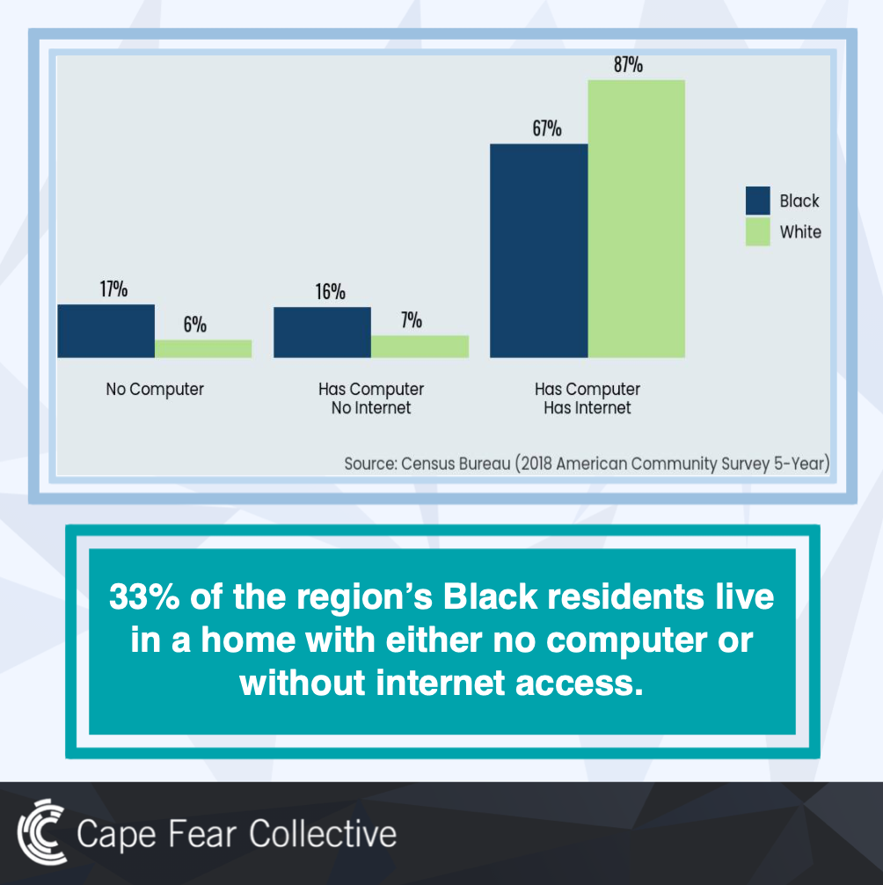

I'm Janie. I am student at UNC-Chapel Hill. I am a computer science major and would like to also major in advertising/pr. I previously attended Cape Fear Community College and earned an Associate of Science. I am from Wilmington, NC. I would love to pursue advertising/pr as my career. I have experience in public relations and marketing work through an internship with New Hanover County as their District Pr Intern. I had the privilege of working the community in this role by working for a nonprofit, Cape Fear Collective. I held the title of Social Media Manager/Intern. Working for this nonprofit flourished my desire to pursue working in the nonproft industry. I would love to continue this kind of work!
My Work Samples
These two posts were made by all the social media team members, including myself. Cape Fear Collective has a great tool called the Racial Equity Dashboard, which we were able to highlight a piece of their content and include some surprising statistics on these posts. These posts allowed our followers and others to be aware of the issues in our communities.

The post above was made by me. Cape Fear Collective and myself were given some information that they wanted us to spread, so I created this post to highlight a horrific statistic to make our followers aware of this issue.